Awami Nastaliq Developer Documentation
Images of Principal Interfaces
default (no suffix)
Connects to alef, lam, kaf, dal.
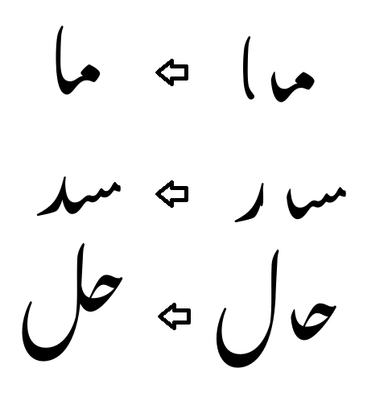
.ai
Connects to ain.
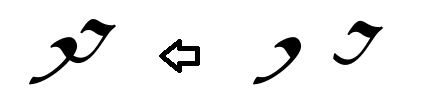
.be
Connects to some beh forms.
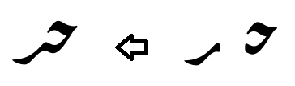
.beM1
Connects to high-tooth behs.
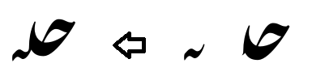
.beM2
Connects to low-tooth behs.
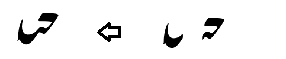
Several initials (beh, feh, kaf, and lam) connect to an alternate form of the final beh using a low-tooth interface.
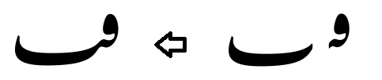
.benn
Connects to beh that occurs before a final noon.
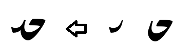
.behg
Connects to beh that occurs before a final heh-goal.
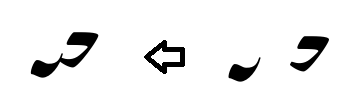
.bere
Connects to beh that occurs before a final reh.
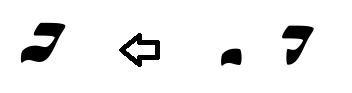
.beF
Connects to standard final beh.
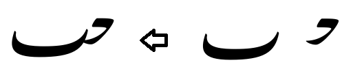
(There is an alternate form of the final beh that essentially implements the low-tooth interface before a handful of initials (beh, feh, kaf, and lam). The initials use .beM2.)
.by
Connects to bariyeh (final).
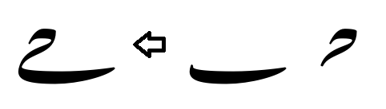
.ch
Connects to final chotiyeh.
There are essentially two different interfaces; the second is used following kaf, lam, initial feh, and initial beh.
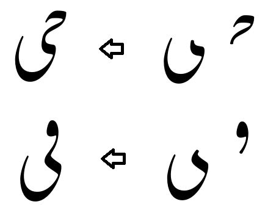
.fe
Connects to feh and medial qaf.
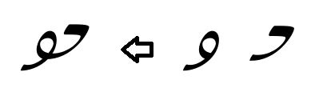
.hd
Connects to heh-doachaschmee.
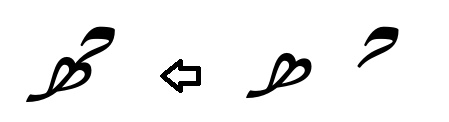
.hgM
Connects to medial heh-goal.
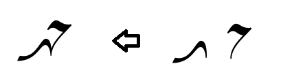
.hgF
Connects to final heh-goal
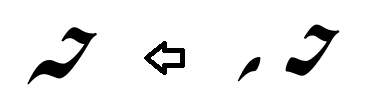
.jm
Connects to jeem.
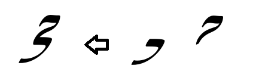
.mm
Connects to the standard meem.
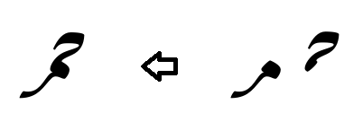
.mmX
Connects to the alternate medial meem (round form).
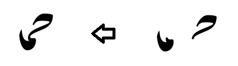
.nn
Connects to final noon.
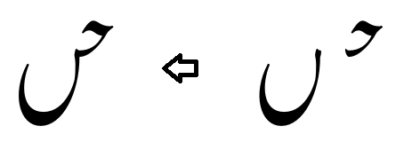
.qf
Connects to final qaf and waw.
Implementationally there are two different interfaces, with the second used following seen, tah, heh doachashmee, and medial feh. However, since the shapes of the final forms are not signficantly different, possibly the two interfaces could be merged.
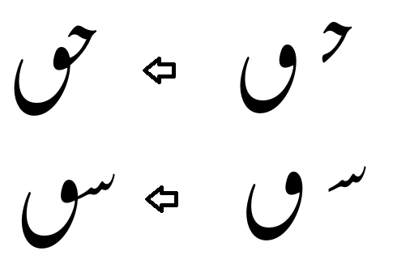
.re
Connects to reh (final).
There are essentially two different interfaces; the second is used following jeem, kaf, lam, and initial beh.
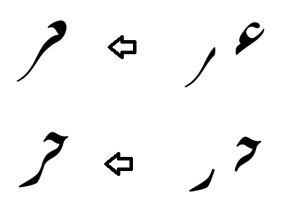
.sd
Connects to sad as well as the rounded form of kaf that occurs before a lam and alef.
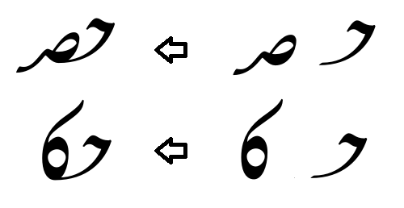
.sn
Connects to the standard seen.
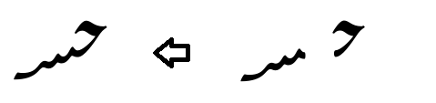
.snsn
Connects to the flat “kashida”-style seen that occurs before another seen.
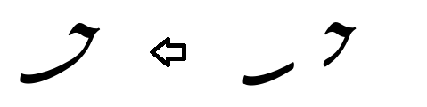
.ta
Connects to tah.
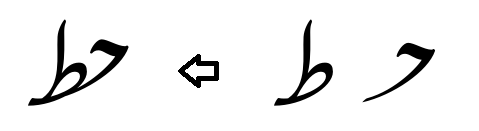
Back to discussion of Glyph Interfaces